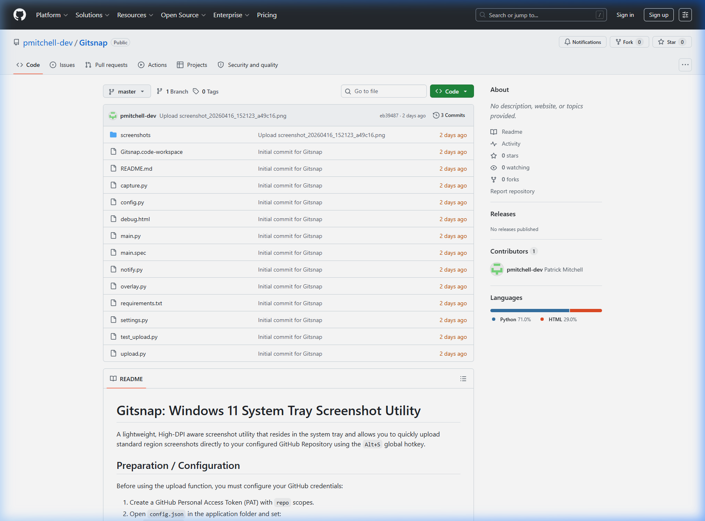

A minimalist Windows 11 tray utility for instant region screenshots and automatic GitHub repository uploads via global hotkeys.

Runs quietly in the background, providing a unified access point for configuration and manual triggers without cluttering the taskbar.
Zero-friction workflow. Trigger the region selector from anywhere in Windows 11 with a single global shortcut.
Configured for seamless integration with GitHub Personal Access Tokens (PAT). Captured regions are uploaded directly to your specified repository and branch.
Built to handle modern display scaling perfectly, ensuring sharp captures on 4K and multi-monitor setups.
| Feature | Implementation | Benefit |
|---|---|---|
| Region Capture | Win+Shift+S precision hooks | Rapid, targeted screenshots |
| Instant Sync | GitHub Raw Content API | Immediate cloud dissemination |
| DPI Awareness | PySide6 High-DPI scaling | Crystal clear on 4K displays |
| Global Hotkeys | Low-level keyboard hooks | Instant access from any app |